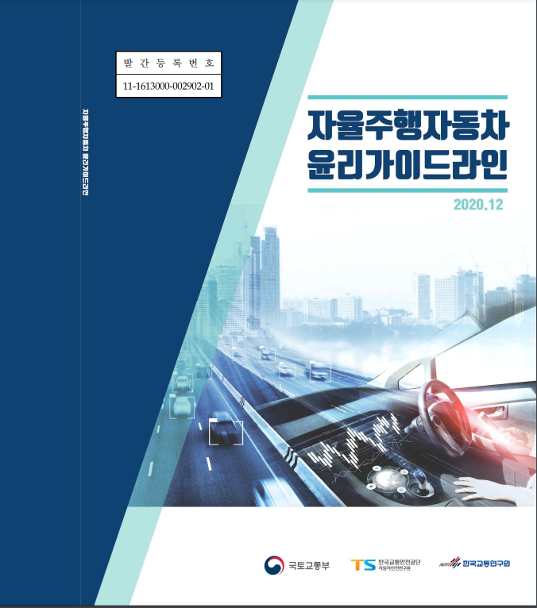

자율주행자동차 트롤리딜레마
자율주행자동차 윤리가이드라인 8항: 8항에서는 우리가 그동안 논의해 왔던 사회윤리 딜레마의 경우를 언급하는데,
실제 상황에서나 예견할 수 없는 행위를 통해 사람의 생명이 선택될 수 없음을 명시한다.
다시 말해 이런 판단을 표준화하거나 프로그램할 수 없다는 것을 명시한다.
횡단보도상황
특수상황
독일 무인자율주행자동차법의 주요내용
